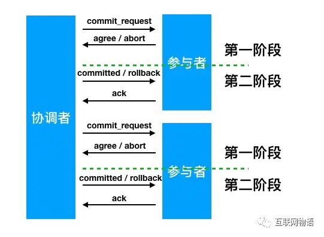
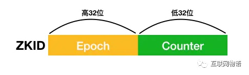
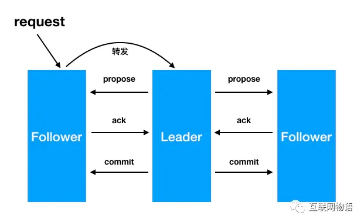
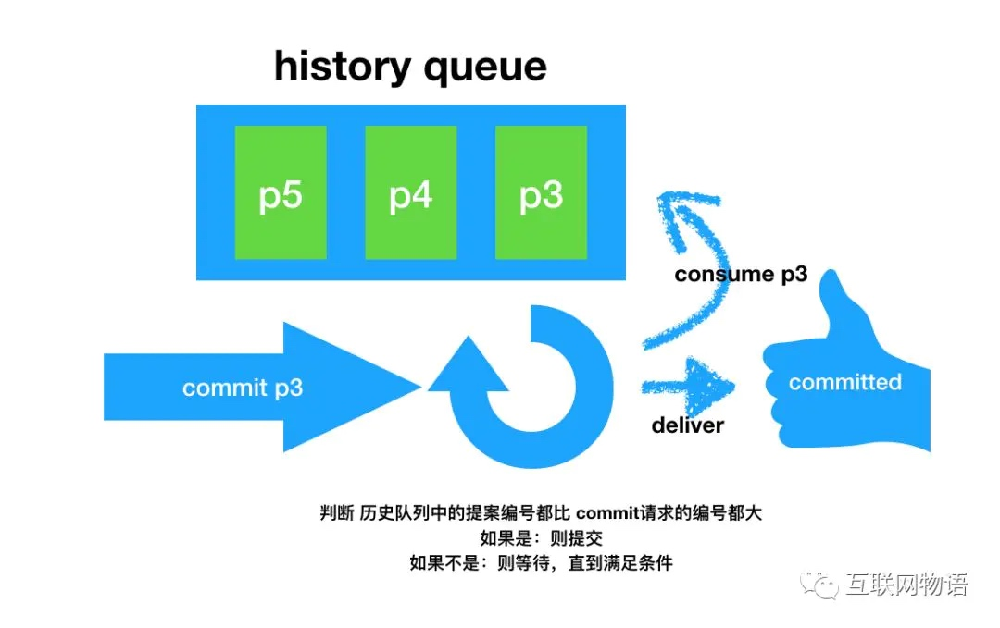

简介
在做分布式系统时，我们常常需要维护管理集群的配置信息、服务的注册发现、共享锁等功能，而ZooKeeper正是解决这些问题的一把好手。
ZAB(ZooKeeper Atomic Broadcast) 则是为ZooKeeper设计的一种支持崩溃恢复的原子广播协议。
两阶段提交
在看ZAB之前我们先复习一下两阶段提交协议

两阶段提交顾名思义主要分为两个阶段
当然两阶段提交协议并不完美，而且存在数据不一致、同步阻塞、单点等问题，这里不在本文的讨论范围
协议介绍
好了，学习完两阶段提交协议，接下来我们继续来分析 ZAB 协议。
很多人会误以为ZAB协议是Paxos的一种特殊实现，事实上他们是两种不同的协议。ZAB和Paxos最大的不同是，ZAB主要是为分布式主备系统设计的，而Paxos的实现是一致性状态机(state machine replication)
尽管ZAB不是Paxos的实现，但是ZAB也参考了一些Paxos的一些设计思想，比如：
- leader向follows提出提案(proposal)
- leader 需要在达到法定数量(半数以上)的follows确认之后才会进行commit
- 每一个proposal都有一个纪元(epoch)号，类似于Paxos中的选票(ballot)
ZAB特性
- 一致性保证
- 可靠提交(Reliable delivery) -如果一个事务 A 被一个server提交(committed)了，那么它最终一定会被所有的server提交
- 全局有序(Total order) - 假设有A、B两个事务，有一台server先执行A再执行B，那么可以保证所有server上A始终都被在B之前执行
- 因果有序(Causal order) - 如果发送者在事务A提交之后再发送B,那么B必将在A之前执行
- 只要大多数（法定数量）节点启动，系统就行正常运行
- 当节点下线后重启，它必须保证能恢复到当前正在执行的事务
ZAB的具体实现
- ZooKeeper由client、server两部分构成
- client可以在任何一个server节点上进行读操作
- client可以在任何一个server节点上发起写请求，非leader节点会把此次写请求转发到leader节点上。由leader节点执行
- ZooKeeper使用改编的两阶段提交协议来保证server节点的事务一致性
ZXID

ZooKeeper会为每一个事务生成一个唯一且递增长度为64位的ZXID,ZXID由两部分组成：低32位表示计数器(counter)和高32位的纪元号(epoch)。epoch为当前leader在成为leader的时候生成的，且保证会比前一个leader的epoch大
实际上当新的leader选举成功后，会拿到当前集群中最大的一个ZXID，并去除这个ZXID的epoch,并将此epoch进行加1操作，作为自己的epoch。
历史队列(history queue)
每一个follower节点都会有一个先进先出（FIFO)的队列用来存放收到的事务请求，保证执行事务的顺序
可靠提交由ZAB的事务一致性协议保证 全局有序由TCP协议保证 因果有序由follower的历史队列(history queue)保证
ZAB工作模式
- 广播(broadcast)模式
- 恢复(recovery)模式
广播(broadcast)模式

- leader从客户端收到一个写请求
- leader生成一个新的事务并为这个事务生成一个唯一的ZXID，
- leader将这个事务发送给所有的follows节点
- follower节点将收到的事务请求加入到历史队列(history queue)中,并发送ack 给 leader
- 当leader收到大多数 follower（超过法定数量）的 ack 消息，leader会发送commit请求
- 当follower收到commit请求时，会判断该事务的ZXID是不是比历史队列中的任何事务的 ZXID 都小，如果是则提交，如果不是则等待比它更小的事务的commit

##恢复模式
恢复模式大致可以分为四个阶段
恢复过程的步骤大致可分为
- 当leader崩溃后，集群进入选举阶段，开始选举出潜在的新leader(一般为集群中拥有最大ZXID的节点)
- 进入发现阶段，follower与潜在的新leader进行沟通，如果发现超过法定人数的follower同意，则潜在的新leader将epoch加1，进入新的纪元。新的leader产生
- 集群间进行数据同步，保证集群中各个节点的事务一致
- 集群恢复到广播模式，开始接受客户端的写请求
当 leader在commit之后但在发出commit消息之前宕机，即只有老leader自己commit了，而其它follower都没有收到commit消息 新的leader也必须保证这个proposal被提交.(新的leader会重新发送该proprosal的commit消息)
当 leader产生某个proprosal之后但在发出消息之前宕机，即只有老leader自己有这个proproal，当老的leader重启后(此时左右follower),新的leader必须保证老的leader必须丢弃这个proprosal.(新的leader会通知上线后的老leader截断其epoch对应的最后一个commit的位置)